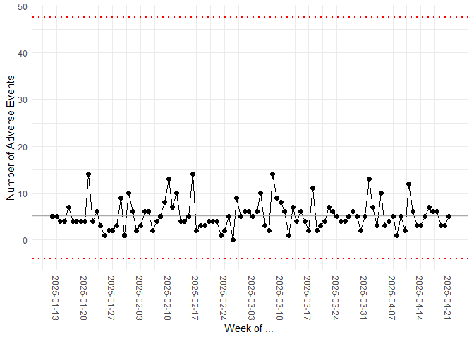

The goal of healthyR.ai is to create a verb framework that allows for easy exploration, transformation and modeling of data.
Installation
You can install the released version of healthyR.ai from CRAN with:
install.packages("healthyR.ai")And the development version from GitHub with:
# install.packages("devtools")
devtools::install_github("spsanderson/healthyR.ai")Example
This is a basic example which shows you how to solve a common problem:
library(healthyR.ai)
#> == Welcome to healthyR.ai ======================================================
#> If you find this package useful, please leave a star: https://github.com/spsanderson/healthyR.ai
#> If you encounter a bug or want to request an enhancement please file an issue at:
#> https://github.com/spsanderson/healthyR.ai/issues
#> Thank you for using healthyR.ai!
library(ggplot2)
data_tbl <- tibble::tibble(
day = sample(c("Monday", "Tuesday", "Wednesday", "Thursday", "Friday"),
100, TRUE),
person = sample(c("Tom", "Jane", "Alex"), 100, TRUE),
count = rbinom(100, 20, ifelse(day == "Friday", .5, .2)),
date = Sys.Date() - sample.int(100))
my_chart <- hai_control_chart(data_tbl, count, date)
#> Registered S3 method overwritten by 'quantmod':
#> method from
#> as.zoo.data.frame zoo
my_chart +
ylab("Number of Adverse Events") +
scale_x_date(name = "Week of ... ", date_breaks = "week") +
theme(axis.text.x = element_text(angle = -90, vjust = 0.5, hjust=1))